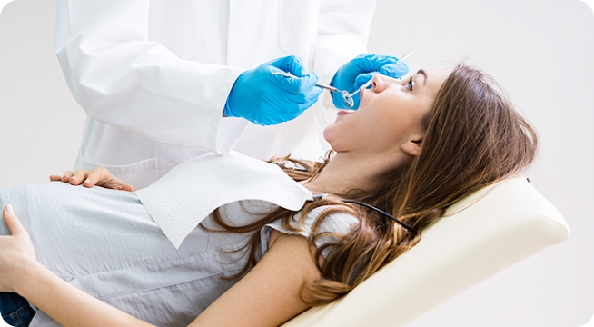

임신 중에도 치과치료가 가능한가요?
임산부의 경우 먹는 것부터 피부에 바르고 착용하는 옷소재까지 신경 쓰이는 것이 하나 둘이 아닙니다. 태아에 해가 되지 않을까 하는 마음에 약 복용은 물론, 치과 진료도 선뜻 발길이 떨어지지 않을 수 있습니다.
치과 치료가 가능한가요?
모든 임신기간 동안 치과 치료는 수행될 수 있으나, 임신기간중에서 치과치료를 가장 안전하게 받을 수 있는 주기는 임신중기(14주~20주)입니다. 이때는 초기를 지나 유산 가능성이 적고 어느 정도 기관 혀성이 완료된 후라 태아에 미치는 영향이 적습니다. 보호장비를 착용하면 방사선 사진도 촬영할 수 있습니다.
치과 방문 시에도 산모 수첩은 필수
만약 임신 중 치과를 방문하게 되면 제일 먼저 의료진에게 예정일과 현재 임신 주수를 꼭 알려주고 가능하다면 치과방문 시 임신확인서나 산모수첩을 가지고 내원하는 것이 좋습니다.
임신 중 구강관리 방법 TIP
- 칫솔은 잇몸 자극이 적은 부드러운 모를 사용하기
- 치간칫솔과 치실로 치아 사이까지 깨끗하게 관리하기
- 입덧이 심해 구토를 자주하면, 위산에 치아가 부식되지 않도록 물로 가글하기
출산 수 일상 생활이 가능하다면 치과 치료도 가능
출산 후 1~2달 이후이거나 모유 수유 중에도 대부분의 치과 진료는 가능합니다 일반적으로 치아에 별다른 문제가 없더라도 출산 후 2개월이 지나면 검진 차원에서 치과를 방문해 전반적인 검사와 치료를 받는 것이 좋습니다.
잇몸의 통증, 충치, 시림 등으로 일상생활이 불편할 정도라면 출산 후 빠른 시일 내에 진료를 받아야 하지만 발치나 치아 교정, 외과적 시술은 출산 6개월 이후로 미루는 것이 좋습니다.
만약 모유 수유 중이라면 항생제나 소염제를 사용하는 발치, 임플란트 치료, 치과용 마취제가 피요한 치료 시에는 모유 수유에 영향을 줄 수 있으므로 치료전 담당의에게 반드시 알리고 치료를 받아야 합니다.